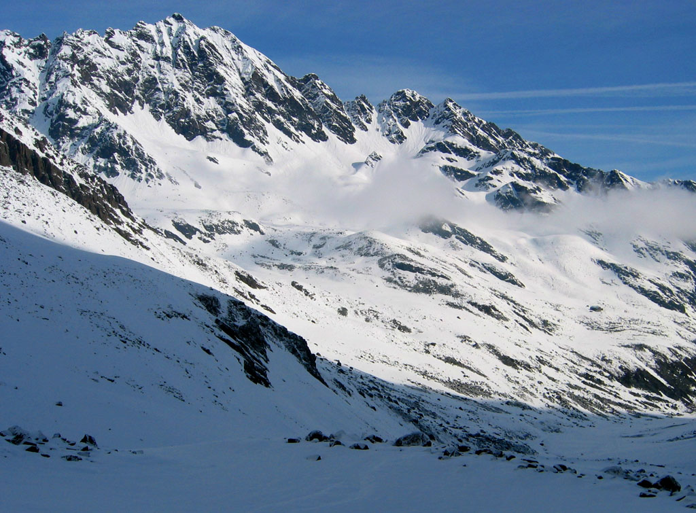
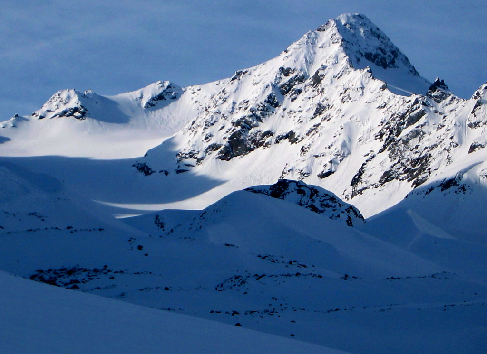
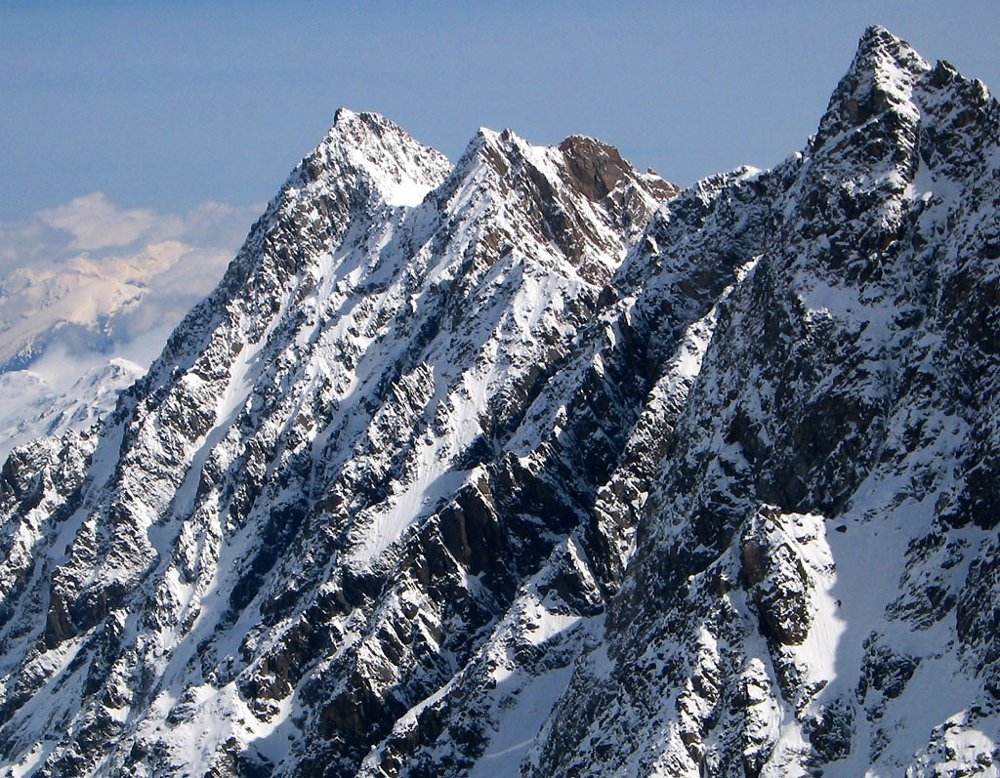
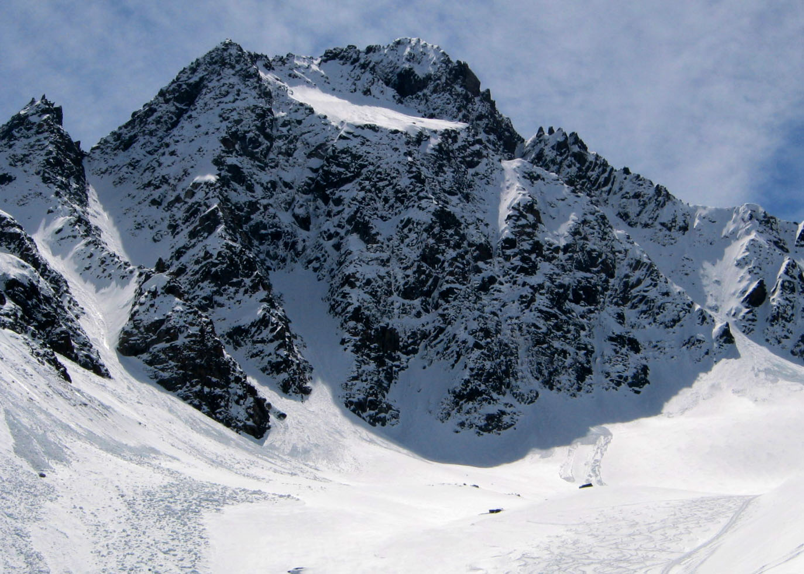
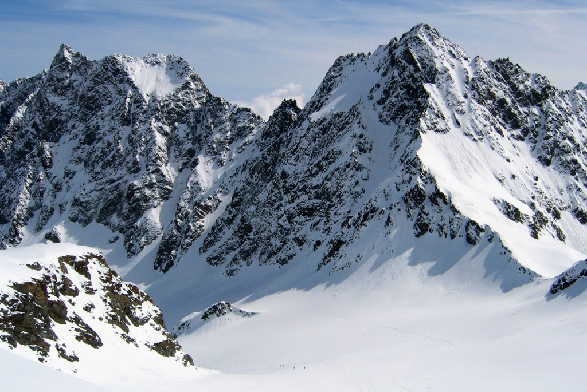
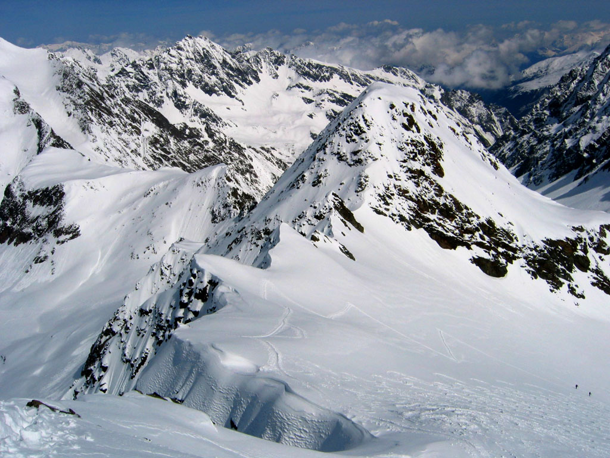
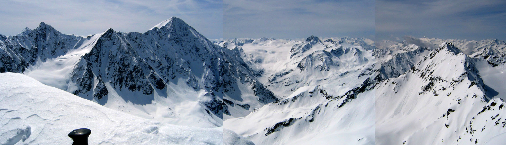
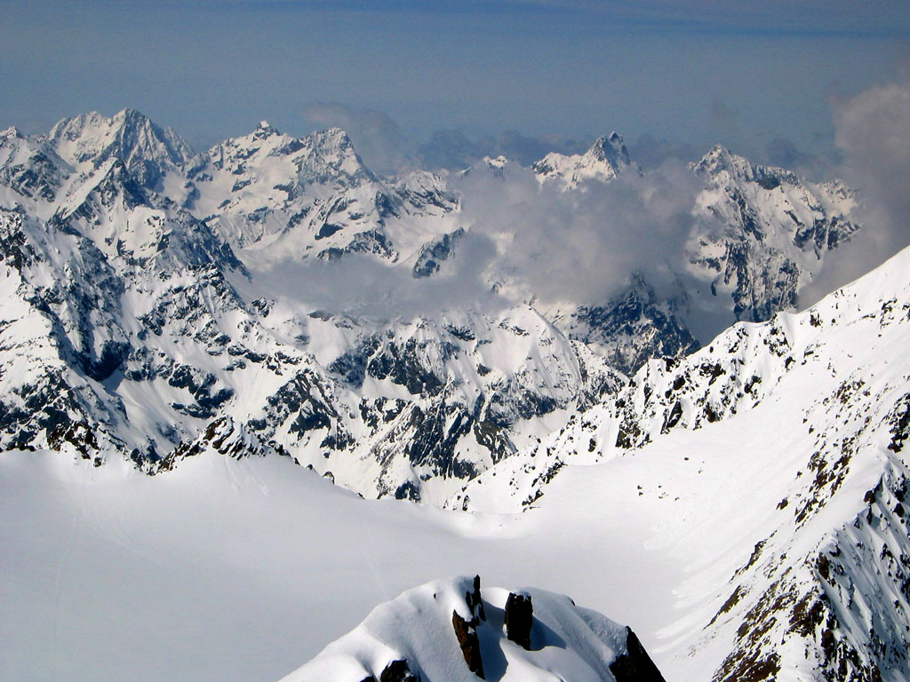
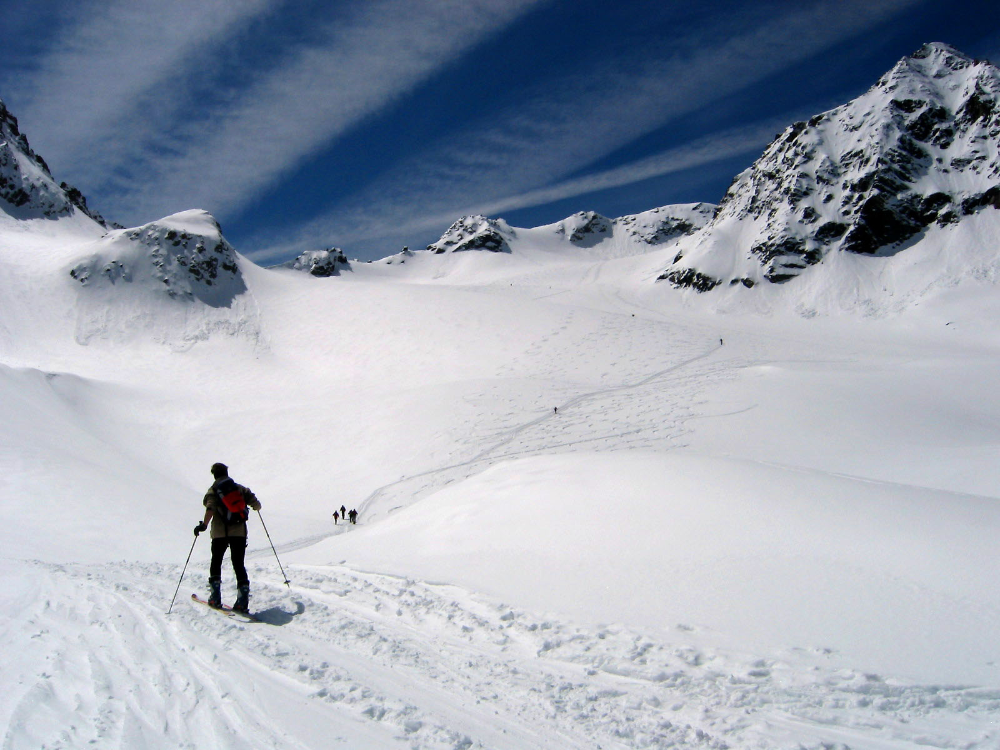

Laengentaler Weisser Kogel
Glacier ascent on skis
Thanks to the holiday on May 1st (go Germany! - we don’t have that one in the U.S.), and the better-than-expected weather, I was able to go for a day trip to the Stubai mountains for another ski tour. I’ve been visiting this area a lot. It seems to have a good concentration of easy yet long ski tours that get pretty high above the valleys. This time I hoped to climb the Laengentaler Weisserkogl. It is at the back of the long Laengental valley. The summit is over 3000 meters high, so I knew I’d feel some exhaustion from the altitude. All to the good!
It took me 2.5 hours to make the drive early in the morning from Munich. The parking lot at the end of the road (Luesens) requires 3 Euros in coins. I moseyed around, looking for someone who had change for my 5 Euro bill. Happily, lots of people were getting ready with skis, and I got some help. Soon I was walking up the mostly snowfree dirt road that must be followed for a mile. At that point, most parties continued straight to climb the Lisenser Fernerkogl, the dramatic peak at the head of the valley. I was sorely tempted by it’s beauty, but I knew that my meager skiing skills would make the long steep descent really hard. I turned right and followed tracks up into the Laengental valley. The lower 200 or 300 feet of this ascent are melting out fast. It took some effort to keep skis on among all the post-holed footsteps. No matter, I was listening to “Crosby, Stills and Nash” on my iPod. I never listened to music from the 1970s, but I have a sudden nostalgia for it. Nevermind that the only music I cared about back then was the Battlestar Galactica Soundtrack (on 8 track tape). Anyway, it’s good stuff.
The Lisenser Fernerkogl looked especially dramatic this morning because of a middle and upper band of clouds that just allowed a glimpse of sunny and rocky slopes high enough above that you have to crane your neck. “That is so cool,” I thought.
The Laengentaler valley flattened, and I could see the Westfalenhaus on the slopes ahead. I wondered about going there for tea and strumpets but it was actually pretty out of the way, because the direct slope has melted out: you need to walk past it on the valley floor, then switchback up several hundred feet. Though the Apfelstrudel and beer around here really grows on you.
Somewhere in the long walk beside the babbling creek I passed a nice fellow, but made a faux paus. Coming along behind I said “Wie geht es dir?” and he turned and scowled at me. I immediately thought “oh crap I used the ‘du’ form of address instead of the more formal ‘Sie’ - is that what I did?” I thought of trying to apologize in my broken German, but then I thought that would be silly. So I said “Guten Tag!” Now the silence kind of unnerved me so I hasted to speed by. I could hear him thinking “ugly American”. Anyway, that dynamic seemed to continue for a while. I would say hello as I passed (or got passed by) various other people, and got the most minimal of responses. Perhaps the headphones around my neck signaled an off-putting cultural imperialism. It’s hard to get used to just silently skinning by people fairly deep in the mountains.
Now I continued in alternating strong wind, shade and sun. I had the mountain to myself for about an hour (that is, I couldn’t see anyone ahead or behind). The views were broad and magnificent, especially of the Brunnenkogl wall, with the Lisenser and Brunnenkogl peaks atop. I wondered when I was actually on the glacier, guessing that it may have receded dramatically in recent years. The DAV map that I had showed it to be massively crevassed, but at this time of year I saw none.
Finally I was making short switchbacks right of the summit, stopping fairly often just to breath. I enjoyed watching a guy ski masterfully down from the summit.
I took off skis a few feet below the summit (scardy cat), and joined a guy there who had passed me a while back. After the encounters earlier I had kind of clammed up. But finally my curiousity asserted itself and I asked what the broad pyramidal summit to the south was (the Schrankogl). 3 more people came up and I took a picture for them. It was 11 am - it had taken me 4.5 hours to get here.
“Hmm, I promised Kris I’d be home around 1 or 2,” but my mental calculations showed there was no way I could make it! First off, I’d have to actually know how to ski to have any hope. Indeed, I was (even for me) unusually stiff and scared on the first skiing, possibly due to the expansive view down! Ugh - it was a struggle! Once I had a major wipe out involving a sort of “snow pie” in the face, which went numb for the next 10 minutes then throbbed painfully. People on the way up would look at me with sympathy or disgust from the skin track some distance away. Finally I gained some measure of dignity, meanwhile promising myself to get lessons so I can enjoy it when the terrain is steeper. I realized I do better when I have a good skiing companion to follow and try to mimic.
Once past the Westfalenhaus I had some trouble in fresh avalanche debries which I learned is very hard to ski through. Folks had made a track, but their gyrations and sudden turns got to be too hard so I decided to walk the last 200 feet to the valley floor. This was pretty dreadful. I felt like Orsen Wells in “Touch of Evil”, scrabbling around and mumbling with a bullet wound under an overpass. Skis in one hand, poles in the other, slipping on rocks just under the surface or post-holing up to my waist into hidden holes. Ugh!
But I did reach the floor, and then could ski and skate again the mile down to the car, which I reached at 1 pm. I tossed in the gear and took off. Near Gries an old woman looked fixedly up the valley at something. I followed her gaze back to the overlord of the valley: the Lisenser Fernerkogl. That thing has to be climbed!
|
 The Hinteregrubenwand and it's hut on the far right |
|
 The Backfallenkopf hides the Weisser Kogel from view. I went up the glacier behind |
|
 The Brunnenkogel wall is very impressive. |
|
 The Hintere Brunnenkogl looks like a worthy summit. |
|
 The view from the summit to the east. Note the climbers coming up the glacier. |
|
 A northern view from the summit. |
|
 A southern pano-rama |
|
 Fantastic peaks to the southeast |
|
 On my way down, several folks were still going up |
{kind=link}
{kind=link}
{kind=link}
{kind=link}
{kind=link}
{kind=link}
{kind=link}
{kind=link}
{kind=link}